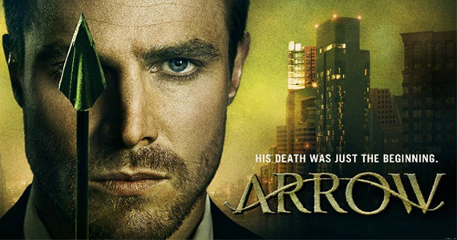
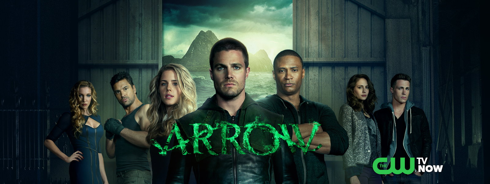
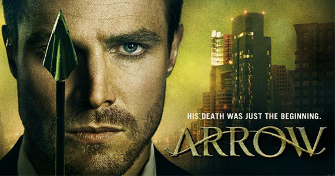
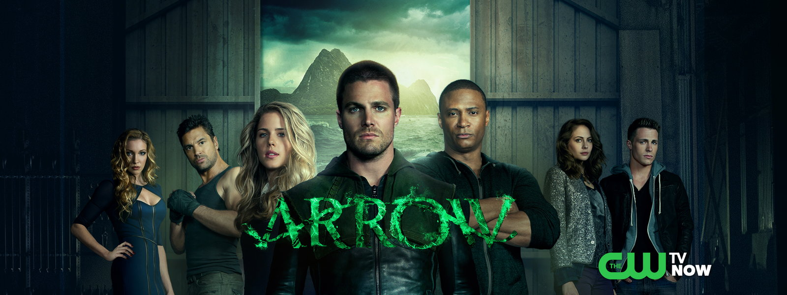

SUITS
Serija Suits, komična drama o advokatima i njihovim parnicama, njihovim elegantnim odelima iza kojih se kriju brilijantni umovi. Priča se fokusira na dvojici jako inteligentnih zgodnih muškaraca čiji šarm obara mnoge devojke. Jedan je iskusni vođa tima, Harvey Specter, a drugi, Mike Ross, nesvršeni pravnik Harvarda, koji se zahvaljujući svom fotografskom pamćenju i oštroumnosti probija sve do vrha.. Radnja je dinamična, sve vreme držeći pažnju gledalaca, sa zamršenom slučajevima, obrtima, rešenjima, sporednim dešavanjima koji se prepliću sa glavnim dogadjajima stvarajući kompletnu sliku o jednoj od najpopularnijih TV serija ikada.